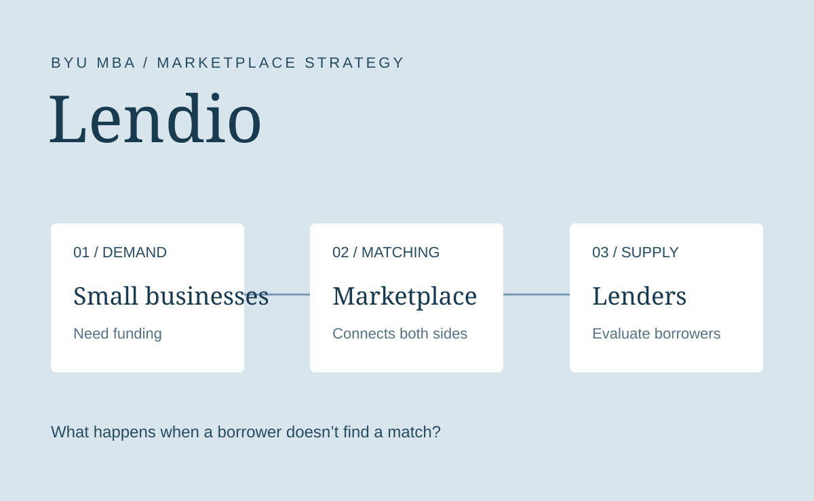

BYU Marriott School of Business · 2025–2026
BYU MBA Projects
& Case Studies.
Selected work in market strategy, negotiation, management accounting, leadership, and technology ethics. Each page explains the business question, my contribution, and the analysis.
Team projects
Featured work

2026 · CSG · Project team lead · Ongoing
AI Services Market Strategy
Leading a market assessment of AI service opportunities, including target customers, competitive positioning, delivery requirements, and go-to-market options.
View project →
2026 · Team strategy project
Lendio Marketplace Strategy
Analyzing lending marketplace economics and the opportunities and tradeoffs involved in following up with unmatched borrowers.
View project →
2025 · Team marketing project
Chips Ahoy! Chunky Growth Strategy
Developed a section-winning team recommendation using consumer research, segmentation, and retail, packaging, and promotion choices.
View project →Browse the work
Projects & analyses
12 entries
CSG · Project team lead · Ongoing
AI Services Market Strategy
Leading a market assessment of AI service opportunities, including target customers, competitive positioning, delivery requirements, and go-to-market options.
Team strategy project
Lendio Marketplace Strategy
Analyzing lending marketplace economics and the opportunities and tradeoffs involved in following up with unmatched borrowers.
Team marketing project
Chips Ahoy! Chunky Growth Strategy
Developed a section-winning team recommendation using consumer research, segmentation, and retail, packaging, and promotion choices.
Negotiation simulation
Labor Negotiation: Baxter / Local 190
Structured a management-side negotiation using a priority matrix to compare productivity, compensation, incentives, and employment terms.
Negotiation planning · Decision modelingNegotiation simulation
Coalition Negotiation: Mouse
Worked within a coalition of mayors to align priorities, assess an offer, and coordinate a stronger negotiating position.
Coalition building · Stakeholder alignmentNegotiation simulation
Stakeholder Negotiation: harborCo
Represented environmental interests in a multi-party negotiation, balancing clear limits, approval power, and opportunities for coalition building.
Stakeholder analysis · BATNA · Approval leverageNegotiation simulation
Concessions & Bargaining: Moms.com
Examined how opening positions, reciprocal concessions, and clear limits affect the quality of a negotiated agreement.
Bargaining discipline · Reciprocal concessionsNegotiation simulation
Buyer Negotiation: Elser
Combined an opening bid with questions about seller priorities in a structured buyer-side negotiation.
Anchoring · Interest discovery · CommunicationApplied coursework
Managerial Accounting & Business Decisions
Applied cost and contribution analysis to compare alternatives, assess operating risk, and allocate limited production capacity.
Relevant costs · Contribution margin · Capacity allocationIndividual analytical paper
AI Ethics in Software Development
Evaluated the responsibilities of developers and managers when AI-assisted coding changes the speed, review, and risk of software delivery.
Stakeholder analysis · Engineering responsibility · Risk assessmentAcademic case analysis
Leadership & Performance Management
Analyzed leadership behavior and a performance feedback conversation in the Mary Griffin at Derby Foods case.
Performance feedback · Difficult conversations · Leadership judgmentClassroom presentation exercise
Persuasive Communication: Charity
Examined how a presentation connects a clear explanation of a problem with a specific audience request.
Audience communication · Presentation structure · Call to actionRelated personal project
Northstar / AI Consultant Bot
A business analysis concept that connects a financial overview, a data explorer, and evidence-based questions. This is a personal project in development.
View project →
Professional development
BYU MBA Consulting Club
Case interview practice and consulting discussions with MBA peers, focused on structuring unfamiliar problems and communicating a recommendation.